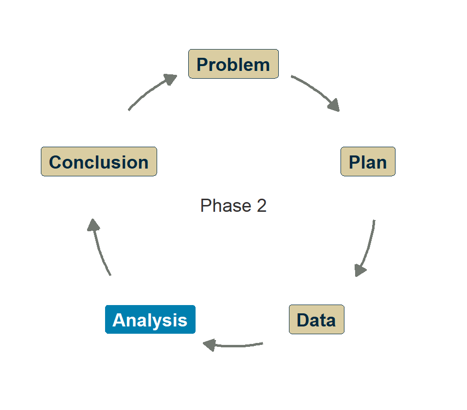
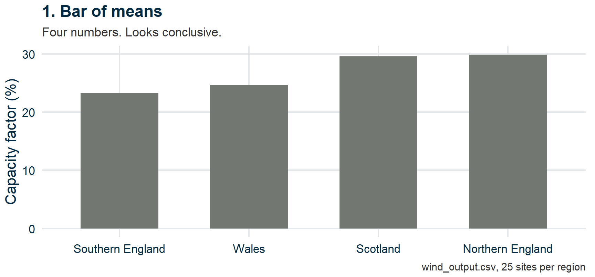
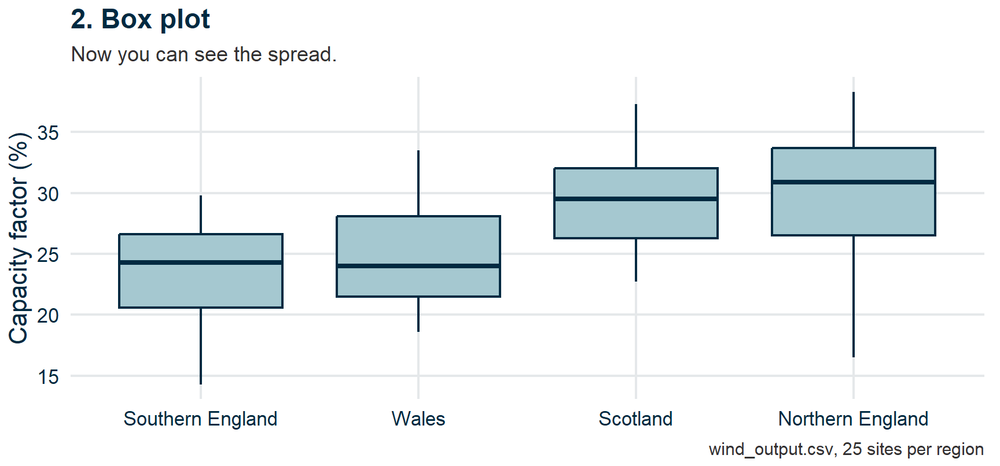
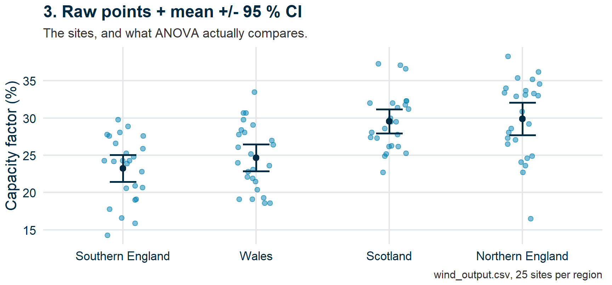
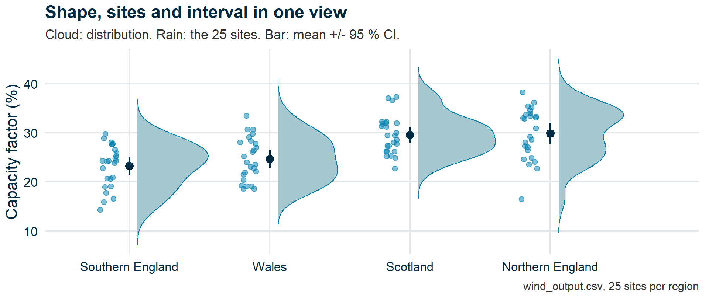
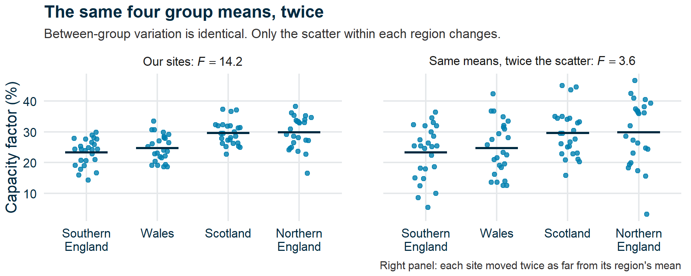
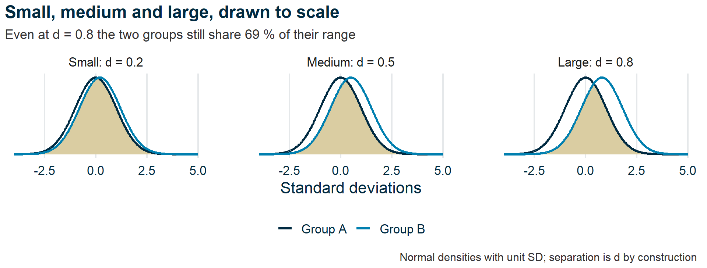

Comparing groups
Research Skills — Week 7
Recap
Recap
- Why not just do lots of t-tests?
- How many tests?
- ANOVA
- Run an ANOVA
- Effect sizes
- HolmesCo’s report card
- Wrap-up
Where we are
Last week: t-tests for two groups. The base rate fallacy.
This week: what happens when you have more than two groups — and more than one test.
Questions?

Submit questions:
PollEv.com/geol
text geol to 07480 781235
Why not just do lots of t-tests?
- Recap
Why not just do lots of t-tests?
🎓 Concept block 1
- How many tests?
- ANOVA
- Run an ANOVA
- Effect sizes
- HolmesCo’s report card
- Wrap-up
The problem
Three groups (e.g., wind farms in three regions).
You could run three pairwise t-tests: A vs B, A vs C, B vs C.
Each test, on its own, has a 5 % chance of a false positive.
Run 20 tests where nothing is going on. How often do you “find” something?
Chance in action
HolmesCo’s mineral survey
⚒️ HolmesCo
Geological Consultants Since 2019
“Leave No Stone Untested”™
Press Release — Multi-Element Anomaly Discovered!
“We tested soil samples from 20 sites for enrichment in 20 elements. We found statistically significant enrichment (p < 0.05) for three elements at one site!”
If there’s truly nothing there, how many significant results would you expect by chance?
The answer
20 × 20 = 400 tests at α = 0.05
Expected false positives: 20, about one per site.
With nothing there at all, some site scores three or more four times in five.
The “discovery” is what noise looks like.
How many tests?
- Recap
- Why not just do lots of t-tests?
How many tests?
💬 Exercise 1
- ANOVA
- Run an ANOVA
- Effect sizes
- HolmesCo’s report card
- Wrap-up
Your project
How many comparisons are you planning to make?
If you run all of them at α = 0.05, what’s your family-wise false positive rate?
Formula: 1 − (1 − α)k where k = number of tests
ANOVA
- Recap
- Why not just do lots of t-tests?
- How many tests?
ANOVA
🎓💻 Concept block 2
- Run an ANOVA
- Effect sizes
- HolmesCo’s report card
- Wrap-up
One test for multiple groups
ANOVA (Analysis of Variance) asks:
“Does any group differ from the others?”
Without specifying which.
Same data, four ways
Before any test: how you show a comparison changes what you see.
Four regions, same 100 sites, same order (low mean to high) — shown four different ways.
Same data, four ways: the bar

Same data, four ways: the box plot

Same data, four ways: the raw points

Takeaway: a bar of means can hide a bad idea; the points behind it usually don’t.
Same data, four ways: the raincloud

w07-groups-raincloud.R · after Heiss (2026)
From δ to F
Week 6: two groups, one number. δ = difference between the means.
Four groups: six differences. Testing each is the problem we just met.
One number instead:
\[F = \frac{\text{how far the group means spread}}{\text{how far sites spread within their group}}\]
“Relative to within”

The null world for F
Corrections for multiple comparisons
| Method | How | When |
|---|---|---|
| Tukey’s HSD | All pairwise, designed for ANOVA | After a significant ANOVA |
| Bonferroni | Divide α by number of tests | Simple, conservative, any context |
Both reduce the false positive rate by being stricter about what counts as significant.
Run an ANOVA
- Recap
- Why not just do lots of t-tests?
- How many tests?
- ANOVA
Run an ANOVA
✏️💻 Exercise 2
- Effect sizes
- HolmesCo’s report card
- Wrap-up
In WebR
Provided dataset: wind farm output in four regions.
- Visualize with violins
- Run
aov() - Is it significant?
- Run
TukeyHSD()— which pairs differ? - Write a one-sentence conclusion
Attendance
Effect sizes
- Recap
- Why not just do lots of t-tests?
- How many tests?
- ANOVA
- Run an ANOVA
Effect sizes
🎓 Concept block 3
- HolmesCo’s report card
- Wrap-up
“Significant” ≠ “important”
A p-value tells you whether an effect is detectable.
It does not tell you whether it’s big enough to matter.
The HolmesCo temperature problem
⚒️ HolmesCo
Geological Consultants Since 2019
“No Anomaly Too Small”™
Two boreholes, 1000 readings each.
Mean difference: 0.02 °C. p-value: 0.001.
“Highly significant temperature anomaly detected!”
Is 0.02 °C meaningful for any practical purpose?
Cohen’s d
A standardized measure of how far apart two groups are:
\[d = \frac{\bar{x}_1 - \bar{x}_2}{s_\text{pooled}}\]
| d | Interpretation |
|---|---|
| 0.2 | Small |
| 0.5 | Medium |
| 0.8 | Large |
What those numbers look like

For ANOVA: η² (eta-squared)
Proportion of variance explained by the grouping variable.
| η² | Interpretation |
|---|---|
| 0.01 | Small |
| 0.06 | Medium |
| 0.14 | Large |
Always report both the p-value and an effect size.
A policy-maker needs to know “how big?” — not just “is it real?”
HolmesCo’s report card
- Recap
- Why not just do lots of t-tests?
- How many tests?
- ANOVA
- Run an ANOVA
- Effect sizes
HolmesCo’s report card
✏️💬 Integrative exercise
- Wrap-up
Three test results
⚒️ HolmesCo
Geological Consultants Since 2019
“Significantly Ahead of the Field”™
Quarterly Technical Summary
| Comparison | Result | HolmesCo says | |
|---|---|---|---|
| 1 | Wind output, 15 hilltop vs 15 lowland farms | p < 0.001, d = 1.51, CI 8.4 to 25.0 GWh | “Elevation matters” |
| 2 | Borehole temperature, 1000 in Durham vs 1000 in N. Yorkshire | p < 0.001, d = 0.15, CI 0.06 to 0.20 °C | “Prioritize Durham” |
| 3 | Solar degradation, 20 mono vs 20 poly panels | p = 0.09, d = 0.55, CI −0.02 to 0.28 points/yr | “No difference” |
Full report: geol-skills.github.io/materials/holmesco-report-card.html
For each: should we act on this? Why or why not?
Wrap-up
- Recap
- Why not just do lots of t-tests?
- How many tests?
- ANOVA
- Run an ANOVA
- Effect sizes
- HolmesCo’s report card
Wrap-up
Key points
- Multiple tests inflate false positives — correct for them
- ANOVA compares multiple groups in one test; TukeyHSD finds which differ
- Significance ≠ importance — always report effect sizes
- “Is that a big number?” now has a formal answer
Any questions we missed?
Submit questions:
PollEv.com/geol
text geol to 07480 781235
Next time
Application session: “Deepening your analysis”
Apply ANOVA or refine your t-test with effect sizes and assumption checks.